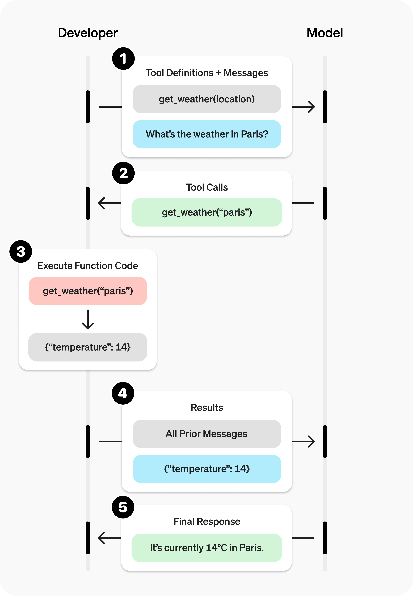

1. 引言：工具调用示例
工具调用涉及与模型的多次交互，简单来看，工具调用流程包含五个步骤：
- 向模型发起请求，并提供可以调用的工具定义及说明
- 接收模型返回的 tool call
- 在应用侧，基于模型的返回结果去真正执行工具
- 将工具执行的结果添加至用户消息列表，再次向模型发起请求
- 接收模型的最终回复（或继续返回更多 tool call ）
下面是向模型发起“What’s the whether in Paris?”请求的执行流程，完整示例详见 OpenAI function calling。

从接口层面看，工具调用能力通过独立的参数 tools 传入，虽然它看起来和用户输入（包括 system messages 和 user messages）是分开的，但在真正喂给模型之前，服务端会把这些工具定义序列化成文本，拼接进 prompt。一个完整的 prompt 大致如下（示意图）：
|
|
注：以 Claude Code 为例，其完整的提示词构建可参考 https://zhanghandong.github.io/harness-engineering-from-cc-to-ai-coding/part2/ch05.html
从模型的角度，它看到的“工具”和“用户消息”本质上是一回事，都是 token 序列。确切的说，模型根本不区分工具和用户消息，工具选择本质上仍然是普通的文本生成（next-token prediction），只不过生成的内容恰好是“调用某个工具”的结构化文本。
那么，用户发起请求时，模型内部究竟发生了什么？
事实上，虽然涉及工具调用，但这仍然只是一次普通的前向推理过程，其目标依然是预测下一个 token，没什么特殊的机制。简单来说：
- 整段 prompt 被 tokenize，经过多层 transformer 注意力计算；
- 注意力过程中，用户消息“what is the weather in Paris?”中的“weather”等 token 会与工具里的
get_whether描述的 token 产生强关联（语义相近），这种关联是训练阶段学到的。 - 模型计算下一个 token 的概率分布。由于后训练（尤其是针对 tool use 的微调）见过大量“用户提出某类需求 → 输出某工具调用”的样本，因此在这个场景下，直接用自然语言回答的概率被压低，而输出调用 get_whether 工具的结构化片段的概率被抬高。
- 因此，模型逐 token 生成工具名和相应的参数 {“location”: “Paris”}，参数值"Paris"则是从用户的输入里“读”出来的。
所以，选择哪个工具的本质是——在所有候选工具名中，哪个 token 序列的生成概率最高。当含有多个候选工具时，模型通过注意力机制比较用户意图与各个工具描述的匹配度，在概率上倾向最匹配的那个。
进一步地，这里有两个方面需要关注。从语义层面看，选哪个工具、填什么参数，这是模型学到的概率分布，不保证100%正确；从格式层面看，要求输出格式必须严格合法，这通常由推理引擎的约束解码(constrained decoding)强制保证，而非模型“自觉”。
因此，本文主要从两方面展开分析：
- 模型到底是如何学会在合适的时机输出工具调用的？
- 如何保证 tool call 输出的 JSON 格式一定合法？
2. 训练视角：模型如何学会在合适时机输出工具调用
预训练只是在海量文本上做 next-token prediction，学到语言、知识、推理的统计规律。这个阶段模型完全没有"工具"概念——见过代码、见过 JSON，但不知道"输出一段 JSON 会触发外部函数执行，结果再回流"这套交互协议。
工具调用能力是后训练阶段灌进去的：核心是 SFT，辅以 RL 优化。
2.1. SFT: 用"标注好的对话轨迹"教会模型
1、训练样本长什么样
构造大量包含完整工具调用轨迹的多轮对话样本（伪格式）：
|
|
注意有两段 assistant 输出：先是工具调用，再是拿到结果后的自然语言回答。
2、损失只算在 assistant 部分(loss masking) —— 最关键的工程细节
训练时只有 assistant 生成的 token 计算 loss 并反向传播，system、user、tool_result 这些"别人说的话"被 mask 掉，不计损失。具体是含义是:
- 模型被训练去模仿 assistant 在每个位置该说什么。
- 在用户提问后，标准答案是输出"tool_call" → 学到这种语境下应续写工具调用。
- 模型在拿到"tool_result"后，再使用自然语言总结 → 学到拿到结果后该回话。
所以"在合适时机输出工具调用"本质是模型在大量轨迹上学到"什么样的上下文 → 后面该跟 tool_call token"的条件概率。不是被显式编程"判断要不要调"，而是被监督信号塑造的统计倾向。
3、必须有"反例"——什么时候不该调工具
只给正样本会导致"见到工具就想调"(over-calling)。高质量数据集必须混入对抗性样本，包括:
- 不需要工具的样本：如"你好"、“1+1 等于几"等问题，直接回答，不输出 tool_call。
- 工具不匹配的样本：提供查询天气的工具，但用户提问星座的问题，应说"没有合适工具"或直接回答。
- 多工具选对的样本：给 5 个工具，只调匹配的那一个。
这些对比样本教会模型"时机”——既该出手时出手，不该出手时忍住。
2.2. 特殊 token 与 chat template: 让工具调用在结构上可识别
引入专门的控制 token 标记区块边界(类 Llama/Qwen 风格示意):
|
|
<|im_start|>、<|im_end|>等是加入词表的特殊 token，后训练中学会使用。- 推理时框架解析输出流，检测到 tool_call 的边界 token 就提取内容，作为结构化 tool_call 返回，而非普通文本。
- “模型输出tool call"和"框架识别tool_call"是彼此配合的两件事，都依赖训练时使用同一套模板。
2.3. RL: 从"会调"到"调得好”
SFT 让模型会调工具，但只是模仿固定标注，有上限。复杂模糊场景下调得准需叠加 RL。
RLHF / 偏好优化
同一 query 生成多个轨迹(调/不调/选错)，由人类或奖励模型排序，用 PPO/DPO 优化。模型学到被偏好的轨迹(选对、参数对、该调才调)概率应更高。
带可验证奖励的 RL(近年 agentic 训练重点)
工具调用的对错往往可程序化验证：
- 工具名是否存在？参数是否符合 schema？→ 可自动判分
- 调用后任务是否真完成(代码跑通？查询正确？)→ 可自动判分
让模型在真实环境里自己探索多轮调用，用"任务是否成功"作奖励。这是当前 agent 模型(连续多次调用、自我纠错)能力的主要来源，教会的是多步规划，即：调 A → 看结果 → 决定调 B → 最终回答。
2.4. 总结
一句话：工具调用时机不是规则判断，而是后训练把"上下文 → tool_call token"这一条件分布通过大量正反例和奖励信号刻进了模型权重里。
| 能力 | 主要由什么训练塑造 |
|---|---|
| 识别"该调工具"的语境 | SFT 正样本 + loss masking, 学条件概率 |
| 识别"不该调/没合适工具" | SFT 反例样本(对比学习的关键) |
| 输出格式可被解析 | 特殊 token + chat template, SFT 中固定使用 |
| 复杂场景选得准、多步规划 | RLHF / 可验证奖励的 RL |
3. 约束解码
本节回答的是如何保证模型输出的 JSON 在格式上一定合法。由于模型生成 token 是概率性的，没有任何机制可以保证模型输出的 token 一定符合预期，因此，必须采取约束解码(constrained decoding)机制来保证输出格式的合法性。
约束解码的核心是 Logit Masking，但对 LLM 内部推理机制不了解时，这块很难理解。因此本文首先从"模型生成一个 token"的最底层讲起，一步步走到 Logit Masking。
结论先行：Logit Masking 指的是在 softmax 之前，把所有"此刻不合法"的 token 的 logit 强行改成 −∞，使其概率归零，永不被采样。
3.1. Logit Masking
第一步：模型"生成一个 token"到底在算什么
首先需要建立的认知是一次前向推理只产出一个 token，模型总是一个 token一个 token 挤出来的(即 decode 自回归)。“挤出一个 token"这一步内部分两半:
|
|
假设词表有 5 万个 token，比如 “the”、“猫”、”{"、"}"、":“等等，每个常见字/词片段/符号都是词表里的一个条目。模型每走一步，会给这 5 万个 token 每个都算出一个分数。
第二步：logit 是什么 —— 就是"分数”
模型前向推理的真正输出不是一个字，而是一个长度 5 万的分数数组，这个分数就叫 logit。
|
|
- logit 可以是任意实数。
- 分数越高表示模型越觉得"下一个该是这个 token"。
- 此刻还没选出任何字，只是给所有候选打了分。
第三步：softmax —— 把分数变成概率
logit 是裸分数，不好直接用（有负数、加起来也不等于 1）。通过softmax把 5 万个分数转成 5 万个概率，使其每个在 0~1 之间、全部加起来等于1。只需记住 softmax 两个性质:
- logit 越大 → 概率越大。
- logit = −∞ → 概率 = 0。
|
|
第四步：采样 —— 真正选出一个 token
有了 5 万个概率，采样 (sampling) 就是按这个概率分布选择其中一个:
- 贪心 (greedy)：直接选概率最高的（上例选 “{"）。
- 带随机性 (temperature / top-p)：像抽奖，概率 0.62 的有 62% 机会中，但 0.21 的也可能中 —— 这是同样输入回答会变化的原因。
选中的 token 接到已有文本后面，整个流程再跑一遍生成下一个。由此，模型推理的基本流程就出来了：前向算出 logits→ softmax 变概率 → 采样选一个 → 拼上去 → 循环。
第五步：问题来了 —— 没有任何机制能够阻止模型选错
假定模型正生成工具调用的 JSON，已吐出:
|
|
按 JSON 语法，冒号后必须跟一个值，此处的值是 string 类型，因此紧接着的应该是一个引号"。但这一步算出的 logits 可能是:
|
|
“}” 的概率有 0.33，完全可能被采样到，一旦选中就变成了{"location":}，显然，这是非法的。这里的根本原因在于，模型生成 next token 是概率性的，只是倾向于输出合法的值，但词表里所有 token 每一步都有被选中的可能，没有任何机制在采样这一刻禁止非法 token。 训练得再好也只是把非法 token 概率压低，想要 100% 合法，只能在"采样这一刻"动手脚 —— 这就是 Logit Masking。
第六步：Logit Masking —— 强行修改非法 token 的 logit
Logit Masking 机制就是在 softmax 之前，把所有"此刻不合法"的 token 的 logit 强行改成 −∞。
回到例子中，约束引擎会知道刚生成完{"location":，JSON 语法此刻只允许值的开头，如"、数字、{、[、true 等，绝不允许 }、:。为此，可以在 softmax 之前插一手，比如：
|
|
至此，现在无论怎么采样（哪怕带随机性），”}“的概率都是 0。进而保证非法 token 绝无可能被抽到，非法路径被物理性封死。
两个要点:
- 模型本身一个参数都没改。masking 是在模型算完 logits、还没 softmax 之间插入的过滤层，能套在任何模型上，即插即用。
- 将 logit 修改为 −∞ 而非 0 或小数：只有 −∞ 经 softmax 才严格等于概率 0。改成小正数(如 logit=−100)概率极小但不为 0，理论上仍可能被抽中，不是确定性的保证。
第七步：约束引擎怎么知道此刻允许哪些 token? —— 状态机
掩码是动态的 —— 每步允许的 token 集合取决于"当前已经生成到哪了”。需要一个记住"当前语法位置"的东西，即状态机，类似下面这样：
|
|
每生成一个 token 就用它推进状态机一格，到新状态约束引擎就知道"接下来允许哪些 token"，从而生成对应掩码。因此完整循环大致如下：
|
|
3.2. 从 JSON Schema 到状态机
在理解了 logit masking 机制之后，我们知道其中的状态机是关键。随之而来的问题是，状态机是如何生成的？回顾文章一开始的示例，在调用 LLM API 时需要传入工具的 API schema，该 schema 严格描述了该工具的定义、参数等信息。如工具 get_weather 的 schema 为：
|
|
状态机就是基于这个 JSON schema 而生成的。
关于状态机，若将其剥离到最朴素，无非就两样东西——即 状态(state) 和 转移(transition)。
- 状态：你"现在站在哪"。“刚开始啥都没生成"是一个状态，“已生成完
{"location":等着填值"是另一个状态。 - 转移：站在某状态，看到某输入，跳到另一状态。
形象地来理解，状态机 = 一堆状态 + 连接它们的箭头。其中含两个特殊状态：起点 (start) 和 终点 (accept，走到这表示一个完整合法 JSON 结束)。从 JSON schema 编译成状态机，就是把 schema 描述的合法形状拆成一连串"我现在在哪个位置、下一步只能接什么"的状态序列。至于 schema 编译成状态机的内部细节，不在本文的讨论范围内。
这里需要提一下两种状态机，分别是 DFA(有限状态自动机) 和 下推自动机。
对于扁平的 JSON，用最简单的 DFA(有限状态自动机) 就能画完 —— 状态数量有限、可一次性全画出。Outlines 走这条路：很多 schema 能先转成正则表达式，正则可机械地转成 DFA。
但真实 JSON 可任意嵌套，如{"a": {"b": {"c": {"d": ... }}}}。由于 DFA 状态是有限的，无法描述嵌套场景下“当前还欠了多少个括号没闭合”这种情况。为此，给状态机配一个栈 (stack)，升级成下推自动机 (pushdown automaton)。完整 JSON 在形式语言里属于上下文无关文法 (Context-free grammar, CFG)，CFG 恰好需要下推自动机识别。XGrammar、llama.cpp 的 GBNF 走这条带栈的路线，用 EBNF/BNF 文法描述结构，再编译成带栈自动机。
注：此处仅为简单的了解。知道有限状态自动机和下推自动机的概念，了解 Outlines 和 XGrammar 这样的工程方案即可。它们均被集成进常见的 LLM 推理引擎，包括 vLLM、SGLang 等。有必要再深入学习。
| 能处理什么 | 局限 | 代表 | |
|---|---|---|---|
| DFA(有限状态机) | 扁平、固定结构的 schema | 无法处理任意深度嵌套 | Outlines(schema→正则→DFA) |
| 下推自动机 | 任意嵌套的完整 JSON | 实现更复杂 | XGrammar、GBNF(CFG→带栈自动机) |
3.3. 工程实现
理解了 Logit Masking 和 schema→状态机 之后，再从具体工程实现角度了解约束引擎是怎么和模型的 token generation 紧密合作的。模型推理的 decode 是逐 token 自回归生成的，用伪代码表示，大致如下：
|
|
约束引擎插手的位置就在 ① 和 ② 之间，这个插入点在工程上有标准名字，称为 logits processor。vLLM、HuggingFace Transformers、TensorRT-LLM等推理引擎都暴露同一个抽象——允许注册一个函数，它在模型算完 logits、采样之前被调用，可任意修改 logits。因此循环就变成了：
|
|
所有约束逻辑封装在 constraint_processor 这个函数里，decode 主循环几乎不用改 —— 这正是 Outlines/XGrammar 能挂到各种引擎上的原因：它们本质都是实现了这个接口的 processor。
3.4. token 与文法不对齐
文法按字符定义，但模型生成的是 token，token 边界与文法边界并不对齐。在词表里，":(引号+冒号)是一个 token， },\n(空格+闭括号+逗号+换行)也是一个 token。即:
- 一个 token 可能横跨多个文法元素；
- 同一段文本有多种 token 切法。
所以在工程实现上，并不是逐字符的检查和拼接，而是对词表里的每个候选 token，判断将其拼接到当前序列后是否仍然合法。当然，这只是一种朴素的原理性表述，由于词表非常大（十几万），朴素的做法开销巨大。前面提到的 Outlines 和 XGrammar，正是从不同角度去优化这一问题。
下面是 gpt-4 的示例，不同的颜色块对应一个 token。如":对应的 token ID 为794。

注：https://tiktokenizer.vercel.app/
3.5. 边界标记 token
结构化输出还要解决"哪一段是工具调用、从哪到哪” —— 这是特殊 token(边界标记)的职责。
tool-use 模型的完整解码链路：
|
|
在整个链路中，特殊 token 同时扮演两个角色：
- 流中的信号：框架靠它在输出 token 流里切出"这段是工具调用”，作为结构化对象返回而非普通文本。
- 解码约束的触发与作用域：边界 token 标记何时开启、约束到哪个 schema、何时关闭约束。调用体内强约束 JSON，自然语言部分不约束。
这也解释为何特殊 token 必须在后训练阶段就教给模型：模型要学会恰当时机主动吐出起始边界 token，整条解析+约束链路才被触发。
4. 多轮工具调用
需要明确的是，“先调用A，再用A的结果推理出下一步应调用B…” 这个多轮编排是在应用层代码（即 Agent Loop）做的，不是推理服务端做的。推理服务端是无状态的，它不知道“轮次”的概念。每收到一次 responses.create(…)，推理端视角是:
“这是一坨完整上下文(工具定义 + 全部历史 + 工具结果)，跑一次前向推理，预测接下来输出什么，返回。”
它不记得上一次请求，没有"第几轮"的概念，两次请求间是失忆的。那它怎么知道 A 已调过、结果是什么？因为第二次请求时，已经把 A 的调用和结果一起重新塞进上下文发过去了。换言之，轮次关系不是被谁记住的，而是每次都把全部历史重新喂进去，让模型在上下文里现场重读出来的。
多轮里可能并行调多个工具，靠 call_id 把"哪个结果对应哪次调用"对上：模型发起调用时框架分配 call_id，回传结果时必须带同一个 call_id。渲染进 prompt 时模型据此正确配对，不张冠李戴。这是保证多轮/多工具因果关系在文本层面对齐的机制。
5. 多工具选择的失败模式分析
1、为什么工具一多就容易选错，可能是哪些原因导致的？
- 注意力被稀释。工具的定义、描述、参数等信息都会拼接进 prompt 中，工具越多，prompt 越长。针对某个特定任务，相关描述要和一堆无关描述争夺注意力。且由于 lost in the middle 现象，夹在中间的内容相对容易被忽略，而工具信息通常排列在 prompt 的中间部分（头部是 system instruction，尾部是 user messages）。
- 工具的描述信息在语义上有重叠，造成混淆。这是最直接的、最关键的原因。比如，search_user vs. get_user vs. find_user，工具名的语义接近，模型容易产生混淆。即，本质上是“工具名 token 的概率分布”是接近的，给模型造成了选择困难。
- 训练分布失配(Out-of-Distribution, OOD)。模型在后训练阶段见的样本绝大多数是少量工具(几个到几十个)。一次塞 200 个工具是分布外输入，选择能力没在这个规模上训练过。
2、具体的失败模式
| 失败模式 | 表现 | 主因 |
|---|---|---|
| Over-calling | 该直接回答却硬调工具 | 训练样本正/反例不平衡 |
| 选错工具 | 几个相似工具里挑错 | 语义重叠 |
| 漏选 | 有合适工具却不调 | 工具埋在中段被忽略 |
| 参数幻觉 | 工具对但 arguments 填了 schema 没有的字段/瞎编值 | 语义层问题 //约束解码只约束格式，无法保证值的正确性 |
| 规模性退化 | 工具数量过阈值后准确率整体下滑 | OOD + 注意力稀释 |
3、如何写 description？
关于 tool description ，不妨看看 Claude Code 中的最佳实践：https://zhanghandong.github.io/harness-engineering-from-cc-to-ai-coding/part2/ch08.html
如何写 description 的一些可落地规则：
- 显式写"何时用 / 何时不用"。不只描述"是什么"，要描述"什么情况下该调"，并主动排除混淆。示例如下，其中那句 Do NOT … use X instead 是消歧关键。
|
|
- 可混淆工具做"交叉引用消歧"。相似工具在彼此描述里点名区分:
search_user: “Search users by fuzzy name/email, returns a list. For exact lookup by known ID, useget_user.”get_user: “Fetch one user by exact user ID, returns a single record. For name-based search, usesearch_user.”
- 工具名本身是强信号。函数名是高权重 token。fn_001、tool_a 等于扔掉一半信号。用动词+宾语、自解释的名字，比如：cancel_order 远胜 order_handler。
- 参数也要约束和描述。比如：
- 能用枚举就别用自由字符串。比如：status: “open”|“closed”，既帮选值，又能被约束解码硬保证。
- 每个参数写清含义、格式、示例。比如：date: ISO 8601, e.g. “2026-06-02”，减少参数幻觉。
- 结构一致、判别性信息前置。把最具区分度的一句放在 description 开头。
- 承认 description 的天花板。写得再好也救不了职责真正重叠的工具——那是工具设计问题，应合并工具或重切职责，而非反复改描述。